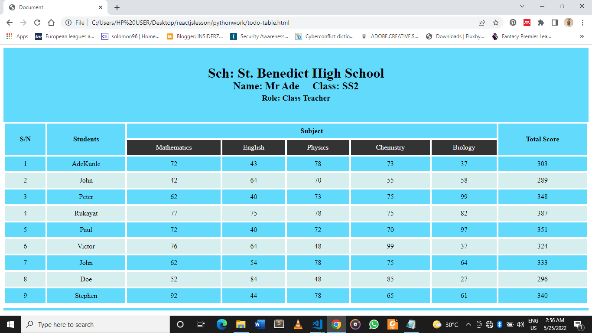

Home
Solomon Achugwoh
@iam_solomun - 18h
This is a great way to test what I have learnt so far in freontend development!!!

Solomon Achugwoh
@iam_solomun - 18h
This is a great way to test what I have learnt so far in freontend development!!!
This is a replica of twitter homepage, and it will also have a landing page.
Solomon Achugwoh
@iam_solomun - 18h
This is a great way to test what I have learnt so far in freontend development!!!
Trends for you
Trending in Nigeria
Mr. Bayo
1.8M Tweets
Trending in Nigeria
Shola
1.5M Tweets
Trending in Nigeria
Last Last
1.3M Tweets
Careers -Trending
ASUU
9,800 Tweets
News -Trending
ARISE TV
9,869 Tweets
Politics -Trending
Buba Galadima
7,908 Tweets
Sports -Trending
Messi
6,08 Tweets